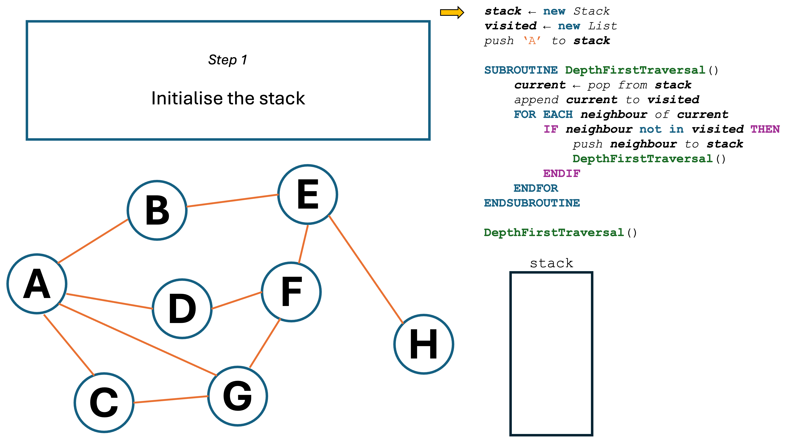
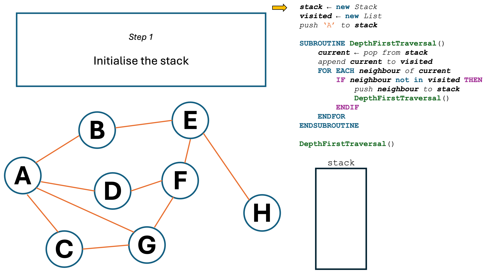
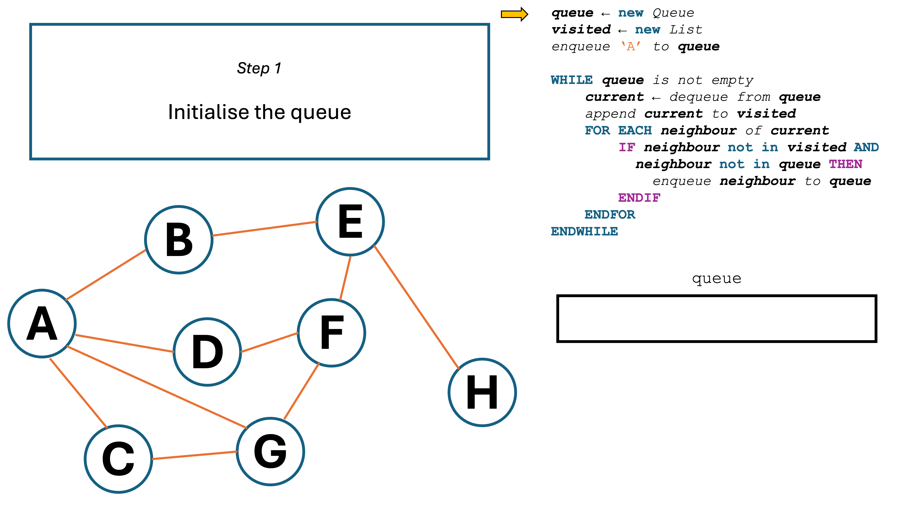
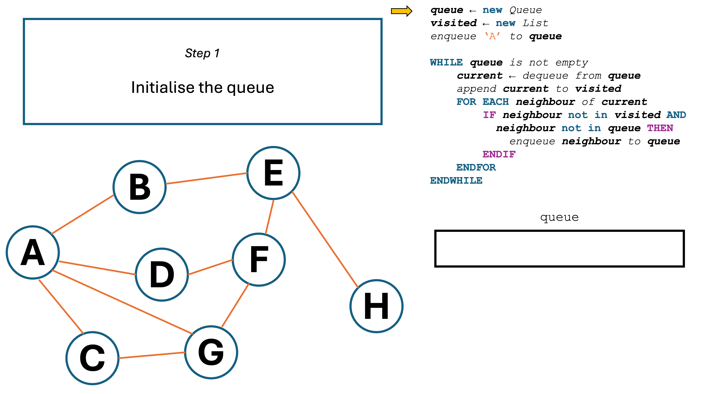

A graph traversal algorithm goes through a graph, hitting every connected node.
A graph traversal algorithm goes through a graph, hitting every connected node.
There are two ways of implementing a graph-traversal algorithm.
 A depth-first graph traversal algorithm explores each route as far as possible before backtracking.
A depth-first graph traversal algorithm explores each route as far as possible before backtracking.
It uses a stack to store the nodes which need to be visited.
Diagram 1 shows a step-by-step animation of how a depth-first traversal would work. Use the arrows to navigate.
 Diagram 1
Diagram 1
 


In this example, the program went as far as possible along a single route (ABEFD)
before backtracking to hit G and C, and then finally reaching H.
 A breadth-first graph traversal algorithm explores all the nodes in the first layer before moving on to the next layer.
A breadth-first graph traversal algorithm explores all the nodes in the first layer before moving on to the next layer.
It uses a queue instead of a stack.
Diagram 2 shows a step-by-step animation of how a breadth-first traversal would work. Use the arrows to navigate.
 Diagram 2
Diagram 2
 


In this example, the program first hit all of the neighbours of A (B,
C, D, and G), before hitting all of their neighbours
(E and F), and then finally their neighbours (H).
 What are some uses of depth-first and breadth-first traversal algorithms?
What are some uses of depth-first and breadth-first traversal algorithms?
Depth-first traversal algorithms can be used to find a way out of a maze. Breadth-first traversal algorithms can be used to find the shortest path between two nodes.